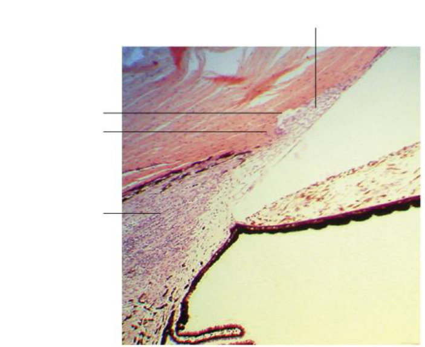
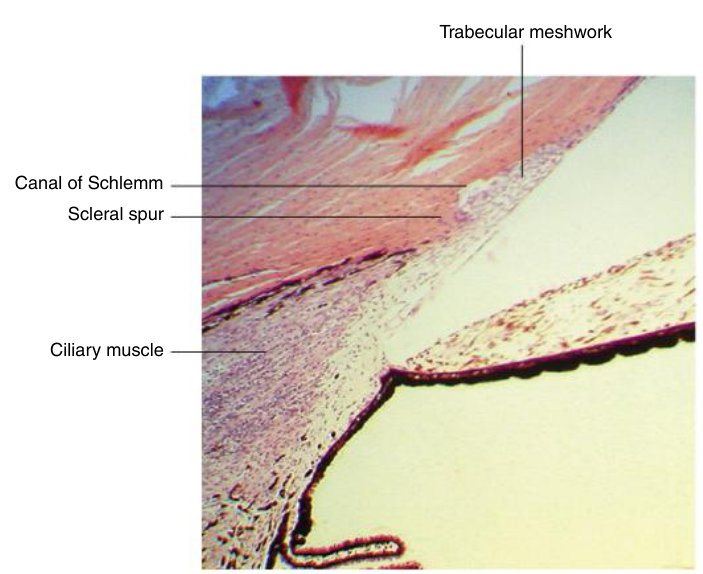
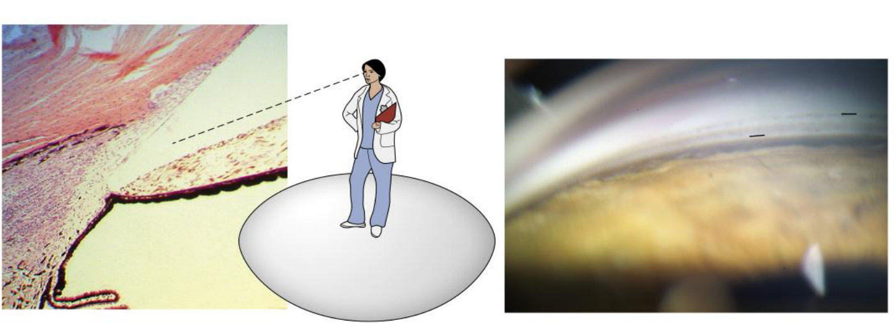
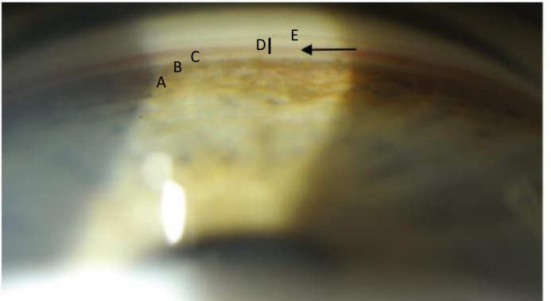

Two ways out, box by box
Your own note beside this objective says it will be a flow chart. So today you learn to draw both routes, not just recognise them.
On a blank sheet, draw the conventional and the unconventional outflow routes as box-and-arrow chains, from the anterior chamber to their final destinations — and name the five angle structures in gonioscopic order.
Only three objectives: compare the three chambers of the globe · identify the anatomical appearance of the anterior chamber angle structures with gonioscopy · describe ways that aqueous exits the anterior chamber.
Your typed note beside the third reads: "the flow of conventional and unconventional → will be a flow chart!" Treat that as instruction.
Exam guidelines · p. 3 · Your notes
1. Three chambers, compared
| Anterior | Posterior | Vitreous | |
|---|---|---|---|
| Contains | aqueous | aqueous; the zonules cross it | gel: 98.5–99.7% water, collagen + hyaluronic acid |
| In front | corneal endothelium | posterior iris surface | posterior lens surface |
| Behind | iris + pupillary area of the lens | anterior face of the vitreous | retina and optic disc |
| At the periphery | the angle: meshwork, ciliary body, iris root | ciliary body, equatorial lens | pars plana, then retina |
| Size | deeper centrally | a ring behind the iris | largest: about 80% of the eye |
Two named spaces in the posterior chamber come up: the canal of Hannover among the zonules and the canal of Petit behind the last of them. In the vitreous, the patellar fossa is the dip the lens sits in, and the strongest attachment is the vitreous base at the ora serrata.
TB 6 · p. 82, 89–92 · Handout 6 · p. 1
2. The angle, structure by structure
| Structure | What it is | What it does |
|---|---|---|
| Scleral spur | dense, coarse collagen at the back of the internal scleral sulcus | ciliary muscle attaches behind, trabecular sheets in front — which widens the spaces and holds Schlemm canal open |
| Trabecular meshwork | avascular; triangular, apex at Schwalbe line, base at the spur; 3–5 sheets at the apex → 15–20 at the spur | filters the aqueous toward Schlemm canal; its cells phagocytose debris |
| · uveal part | inner, cordlike, largest pores | first filter — and the entry to both routes |
| · corneoscleral part | outer, sheetlike, pores narrowing toward the canal | the finer filter of the conventional route |
| Juxtacanalicular tissue | between the last sheet and the canal's inner wall | with that inner wall, the site of highest resistance |
| Schlemm canal | a circular venous channel holding aqueous, not blood | 25–37 external collector channels leave its outer wall |
| Schwalbe line | the end of Descemet membrane | the anterior landmark of the angle |
TB 6 · p. 82–87 · Handout 6 · p. 2–3

Name the four lines top to bottom before you open the answer.
Answer: Fig. 6.3 with labels

Top to bottom: trabecular meshwork · canal of Schlemm · scleral spur · ciliary muscle.
3. Gonioscopy: why, and in what order
You cannot see the angle directly: the limbus is opaque, and light from the angle never leaves the cornea because of total internal reflection. A gonioscopy lens beats this with mirrors. The view is as if you stood on the lens and looked across the iris into the angle.
That is posterior to anterior — your note is the practical version: "once you find the pupil, then you can follow out". The ciliary body band is darker than the iris; the spur is the white line; the posterior meshwork is mildly pigmented, and that is where most filtering happens; Schwalbe line is hard to see.
Schlemm canal lies behind the meshwork and is normally invisible. It shows only when blood backs up into it — which happens if pressure on the lens compresses the episcleral veins until their pressure exceeds IOP. Then a thin red line appears in the meshwork area.
TB 6 · p. 84–86 · Slides 6 · #7–8


4. Where the aqueous comes from
It feeds the avascular cornea and lens with oxygen and glucose, carries waste away, and its steady volume maintains IOP. In the anterior chamber it circulates by convection: down the cooler cornea, up the warmer iris.
TB 6 · p. 85 · Handout 6 · p. 4
5. The two routes — draw these
Both start in the uveal meshwork. Cover the page and reproduce them.
TB 6 · p. 86–87 · Handout 6 · p. 3–4 (the handout ends at "episcleral or conjunctival veins" — know both wordings)
…and then three exits: 1 · through the sclera to the orbital vessels · 2 · into the choroid, then the anterior ciliary and vortex veins · 3 · lymphatic channels in the ciliary stroma.
TB 6 · p. 86–87. Your notes list four exits; the textbook names three.
| Conventional | Unconventional | |
|---|---|---|
| Share | the rest | 5–60%, falling with age |
| Driven by | pressure — this is what keeps IOP steady | fairly constant, not pressure-dependent |
| Resistance | juxtacanalicular tissue + inner wall | little |
| Ciliary muscle contracts | outflow rises (spaces widen) | outflow falls (bundles squeeze together) |
6. Why pressure rises
IOP stays in range because production equals outflow. Production is fairly constant — so a raised IOP almost always means decreased outflow, that is raised resistance in the conventional route. Normal: 10–21 mm Hg.
Less production: beta-blockers, alpha-2 agonists (brimonidine), carbonic anhydrase inhibitors. More conventional outflow: pilocarpine (contracts the ciliary muscle and opens the sheets), Rho kinase inhibitors. More uveoscleral outflow: prostaglandins, the most effective class.
TB 6 · p. 88–89 · Your notes
7. Drill
More: Mixed quiz — Chapter 6 · pictures only: Image quiz — Chapter 6.
Read study script § chapter 6, section 5, then Handout 6 pages 3–4. Then close everything and draw both flow charts. Do that three times this week — it is one of the few places where the exam format is known.
Ask your teacher — "why does contracting the ciliary muscle help one route and hinder the other?", "quiz me on the gonioscopic order backwards", "make me draw both routes from memory and mark them".